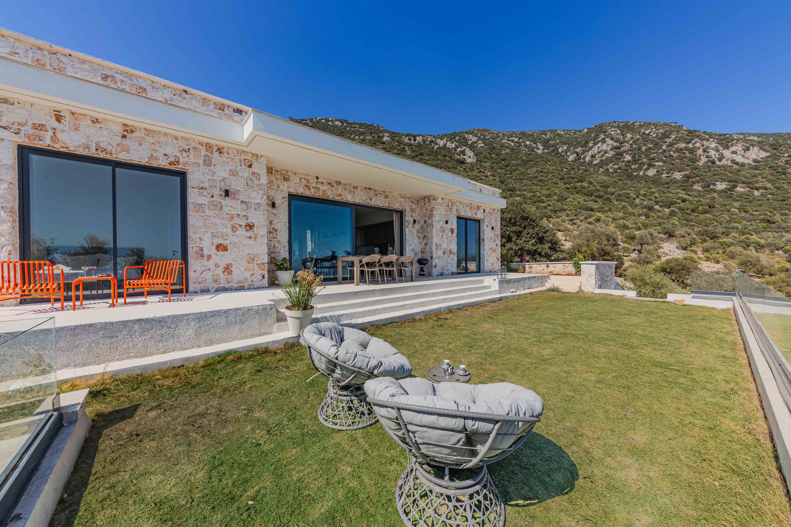

Technische Reinigung für Gewerbepark und Geschäfte
Das Gewerbegebiet von Finestrat zieht täglich tausende Besucher an. Das Image Ihres Geschäfts hängt von der Transparenz Ihrer Schaufenster ab.
Einkaufszentren und Geschäfte
Schnelle und effektive Wartungsdienste für große Glasflächen in Geschäftslokalen.
Gastronomie und Freizeit
Wir hinterlassen die Fenster von Restaurants und Terrassen makellos und entfernen kontinuierlich Fingerabdrücke und Umweltschmutz.
Industriehallen
Reinigung von Glasflächen und Oberlichtern in den Industriegebieten von Finestrat mit Höhenausrüstung.
Professionelle Pflege für Luxusvillen und Wohnanlagen
Die neuen Wohnanlagen an den Hängen von Finestrat zeichnen sich durch riesige Vorhangfassaden und Fenster mit Blick auf die Skyline von Benidorm aus.
Reinigung großformatiger Verglasungen
Wir verwenden Teleskopstangen mit reinem Wasser, um hohe und feste Fenster zu erreichen, ohne schwere Leitern, die Ihren Garten beschädigen könnten.
Streifenfreies Finish
Die Wasserhärte in Finestrat kann dauerhafte Kalkflecken hinterlassen. Unser Osmose-System garantiert vollständig transparentes Glas.
Diskretion und Sicherheit
Wir arbeiten nach den Standards für Privatsphäre, die die Bewohner von Gegenden wie Sierra Cortina erwarten.

Schutz für die erste Strandlinie
In La Cala de Finestrat ist das Meeresklima der größte Feind des Glases. Wir bieten eine gründliche Reinigung, die die Salzschicht entfernt und Aluminium- und PVC-Rahmen vor korrosivem Verschleiß durch das Meer schützt.
Ausgerüstet für jede architektonische Herausforderung
Finestrat verbindet das traditionelle Dorf mit der modernsten Architektur. Unsere langjährige Erfahrung erlaubt es uns, sowohl die sensibelste manuelle Reinigung in der Altstadt als auch den Einsatz von Hebebühnen für moderne Wohngebäude zu meistern.
+35 Jahre Handwerk
Es gibt keine Struktur, die wir nicht bereits gereinigt haben.
Sozialversicherung und Arbeitsschutz
Unser gesamtes Team ist ordnungsgemäß versichert und geschult.
Was unsere Kunden in Finestrat häufig fragen
Können Sie die Fenster im Einkaufszentrum außerhalb der Öffnungszeiten reinigen?
Antwort: Selbstverständlich. Wir koordinieren uns mit den Sicherheitsbeauftragten und der Geschäftsleitung, um den Service in den schwach frequentierten Stunden oder nach Schließung durchzuführen.
Ist die Reinigung mit der Teleskopstange sicher für meine Designfenster?
Antwort: Es ist die sicherste Methode. Da wir reines Wasser und Bürsten mit weichen Borsten verwenden, besteht kein Risiko für Kratzer oder mechanische Einwirkungen auf das hochwertige Glas.
Die Klarheit, die Finestrat verdient
Ob Sie Händler am Boulevard sind oder Anwohner in der Sierra – Luz de Luna ist Ihre Garantie für dauerhaften Glanz.